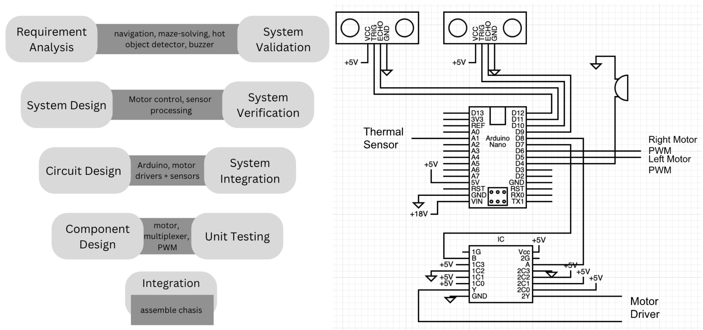
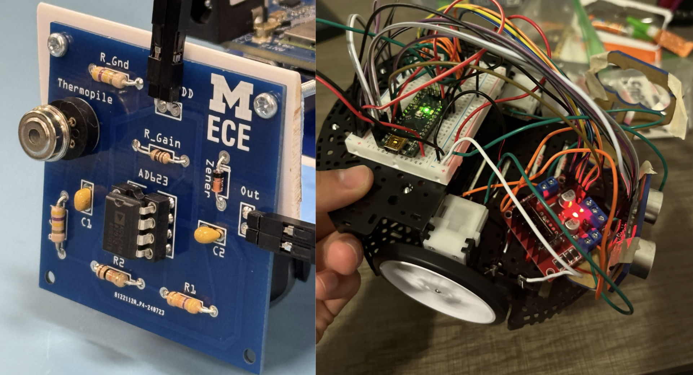

Under Prof. Necmiye Ozay • Electrical & Computer Engineering (ECE) • University of Michigan • Jan – Apr 2024
Overview: An autonomous rescue robot for search and rescue scenarios. It uses ultrasonic ranging and a thermal sensor
to navigate, avoid obstacles, detect heat sources (victims), and stop/alert with a buzzer, with closed-loop motor control for stable motion.
Test & Fabrication: Oscilloscope, Logic Analyzer, DMM, Bench Supply, 3D Printer, Soldering tools
Demo Video: Path-following and heat “victim” detection (the robot follows the course, finds the orange bottle (thermal target/person), and beeps on detection)

Fig. 2: System design and wiring — Left: high-level design flow outlining navigation, sensing, and actuation.
Right: wiring schematic with Arduino Nano, dual ultrasonic sensors, thermal sensor, multiplexer, and motor driver connections.

Fig. 3: Hardware implementation — Left: custom thermopile sensor PCB with instrumentation amplifier (AD623) for victim heat detection.
Right: autonomous rescue robot assembly with Arduino Nano, motor driver, dual ultrasonic sensors, and thermopile module integrated on chassis.